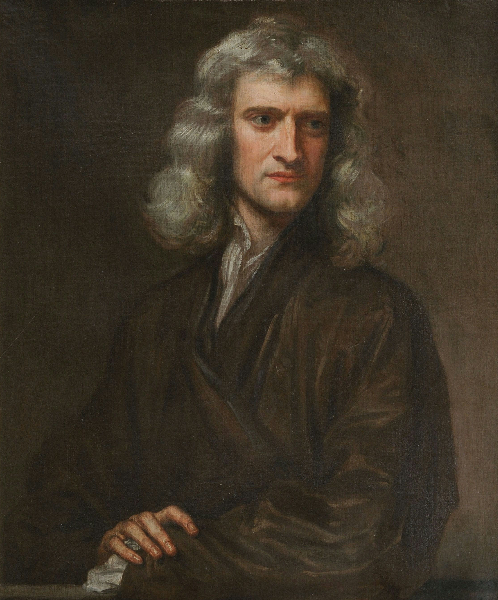

Close Sources & credits Slide-led soundtrack “Ascension” by Scott Buckley — released under CC BY 4.0. Official recording and track page · CC BY 4.0 . The recording is presented as short looping chapters, with changes in playback position, filtering, level and crossfades controlled by the selected slide. The recording file itself is unchanged.
Closing translations and artwork The English Scripture quotation is Proverbs 4:23, NIV. The Thai is our own translation of the English used here, not a quotation attributed to an official Thai Bible edition. The final symbolic painting was newly generated with the gathering looking toward the audience; it is not a historical event or evidence of anybody’s endorsement or shared beliefs.
Christian teaching and readings This presentation introduces mainstream historic Christian teaching. Beliefs are identified as beliefs, and the Gospel account as Scripture. Christian traditions differ in some interpretations and practices.
Scene 1: Christianity · Presenter 1. Primary reading .Scene 2: Knowing God · Presenter 1. Primary reading .Scene 3: One God · Presenter 1. Primary reading .Scene 4: Jesus Christ · Presenter 2. Primary reading .Scene 5: The Cross · Presenter 2. Primary reading .Scene 6: Resurrection & Grace · Presenter 2. Primary reading .Scene 7: The Bible & Prayer · Presenter 3. Primary reading .Scene 8: The Cross & Baptism · Presenter 3. Primary reading .Scene 9: Communion · Presenter 3. Primary reading .Scene 10: Love in action · Presenter 4. Primary reading .Scene 11: Care that reaches people · Presenter 4. Primary reading .Scene 12: Love our neighbours · Presenter 4. Primary reading .Scene 13: Across generations · Shared closing. Primary reading .Matthew 10:1–4: the apostles . The People dialog preserves historical and theological differences; it does not claim that every person shared the same beliefs.
World Vision’s 2.8 million figure is the organization’s self-reported 2025 programme reach for safer, more accessible water. This is one example of Christian humanitarian work, not a total count of people helped by God. The World Vision reference photograph listed below illustrates an earlier programme.
Scripture quotation marked NIV is from the Holy Bible, New International Version®, NIV®. Copyright © 1973, 1978, 1984, 2011 by Biblica, Inc. Used by permission. All rights reserved worldwide.
The Bible has Old and New Testaments. The Gospels tell the story of Jesus’ life and teaching. Read the Bible and its books .
The generated service scenes illustrate sharing food, water and care. They do not depict World Vision staff, beneficiaries or projects, and do not document the reported 2025 programme reach.
AI-generated cinematic scenes Scenes 2–12 use complete AI-generated Christian artistic scenes created for this presentation. They illustrate Christian themes and Gospel accounts; they are not historical photographs or evidence of the events depicted. The closing image is a symbolic gathering across time, not a real historical event. Likenesses are artistic interpretations; no depicted person or organization endorses this presentation. No public-domain or Creative Commons license is asserted for generated images.
Opening, teaching assets and earlier visual references The opening stained-glass picture, retained baptism and Communion teaching images, and People reference portraits keep their source credits. Historical religious paintings listed here were used in earlier editions and remain as reference sources; the main scenes now use generated artwork. The standalone cross is an original vector from the preceding edition.
File:Lidzbark Warmiński 2023 39 Collegiate Church Jesus Stained Glass.jpg: Scotch Mist · CC BY-SA 4.0 . Presentation uses CSS cropping, masks and tonal adjustments; downloaded reference files are unchanged. File:Ary Scheffer - Christus Consolator - Google Art Project.jpg: Ary Scheffer · Public domain . Presentation uses CSS cropping, masks and tonal adjustments; downloaded reference files are unchanged. File:Bloch-SermonOnTheMount.jpg: Carl Bloch · Public domain . Presentation uses CSS cropping, masks and tonal adjustments; downloaded reference files are unchanged. File:Brooklyn Museum - The Resurrection (La Résurrection) - James Tissot.jpg: James Tissot, Brooklyn Museum · Public domain . Presentation uses CSS cropping, masks and tonal adjustments; downloaded reference files are unchanged. File:Christ Taking Leave of the Apostles.jpg: Duccio di Buoninsegna · Public domain . Presentation uses CSS cropping, masks and tonal adjustments; downloaded reference files are unchanged. File:Brooklyn Museum - The Miracle of the Loaves and Fishes (La multiplication des pains) by James Tissot.jpg: James Tissot · Public domain . Presentation uses CSS cropping, masks and tonal adjustments; downloaded reference files are unchanged. Open Bible against blurred landscape: Jessica Mangano · Unsplash License . Presentation uses CSS cropping, masks and tonal adjustments; downloaded reference files are unchanged. File:Lutheran baptism.jpg: keskieve · CC0 . Presentation uses CSS cropping, masks and tonal adjustments; downloaded reference files are unchanged. Close-up of Communion with Bread and Wine: Jacqueline Goncalves · Pexels License . Presentation uses CSS cropping, masks and tonal adjustments; downloaded reference files are unchanged. World Vision clean-water programme: Maves with a water container: World Vision · © World Vision; classroom source illustration, not an open-license image . Presentation uses CSS cropping, masks and tonal adjustments; downloaded reference files are unchanged. People dialog reference portraits Justin Bieber: Lou Stejskal · CC BY 2.0 . Presentation uses CSS cropping, masks and tonal adjustments; downloaded reference files are unchanged. Chris Pratt: Dick Thomas Johnson from Tokyo, Japan · CC BY 2.0 . Presentation uses CSS cropping, masks and tonal adjustments; downloaded reference files are unchanged. Stephen Curry: Erik Drost · CC BY 2.0 . Presentation uses CSS cropping, masks and tonal adjustments; downloaded reference files are unchanged. Isaac Newton: Godfrey Kneller (1646–1723) · Public domain (faithful reproduction of a two-dimensional public-domain artwork; PD-Art) . Presentation uses CSS cropping, masks and tonal adjustments; downloaded reference files are unchanged. Michael Faraday: Thomas Phillips (1770–1845) · Public domain (faithful reproduction of a two-dimensional public-domain artwork; PD-Art) . Presentation uses CSS cropping, masks and tonal adjustments; downloaded reference files are unchanged. Johann Sebastian Bach: Elias Gottlob Haussmann (1695–1774) · Public domain (faithful reproduction of a two-dimensional public-domain artwork; PD-Art) . Presentation uses CSS cropping, masks and tonal adjustments; downloaded reference files are unchanged. Wolfgang Amadeus Mozart: Possibly Johann Nepomuk della Croce (1736–1819); digital reproduction credited to Stafford Choral Society · Public domain (faithful reproduction of a two-dimensional public-domain artwork; PD-Art) . Presentation uses CSS cropping, masks and tonal adjustments; downloaded reference files are unchanged. Ludwig van Beethoven: Joseph Karl Stieler (1781–1858) · Public domain (faithful reproduction of a two-dimensional public-domain artwork; PD-Art) . Presentation uses CSS cropping, masks and tonal adjustments; downloaded reference files are unchanged. Neymar Jr — PSG presentation, 2017: Antoine Dellenbach · CC BY-SA 2.0 . Presentation uses CSS cropping, masks and tonal adjustments; downloaded reference files are unchanged. Kevin Durant — Golden State Warriors, 2019: All-Pro Reels · CC BY-SA 2.0 . Presentation uses CSS cropping, masks and tonal adjustments; downloaded reference files are unchanged. LeBron James — Los Angeles Lakers, 2022: Erik Drost · CC BY 2.0 . Presentation uses CSS cropping, masks and tonal adjustments; downloaded reference files are unchanged. Dwight Howard — Orlando Magic, 2008: Keith Allison · CC BY-SA 2.0 . Presentation uses CSS cropping, masks and tonal adjustments; downloaded reference files are unchanged. Framework license reveal.js 6.0.2, MIT License.
Copyright (C) 2011-2026 Hakim El Hattab, http://hakim.se, and reveal.js contributors
Permission is hereby granted, free of charge, to any person obtaining a copy
of this software and associated documentation files (the "Software"), to deal
in the Software without restriction, including without limitation the rights
to use, copy, modify, merge, publish, distribute, sublicense, and/or sell
copies of the Software, and to permit persons to whom the Software is
furnished to do so, subject to the following conditions:
The above copyright notice and this permission notice shall be included in
all copies or substantial portions of the Software.
THE SOFTWARE IS PROVIDED "AS IS", WITHOUT WARRANTY OF ANY KIND, EXPRESS OR
IMPLIED, INCLUDING BUT NOT LIMITED TO THE WARRANTIES OF MERCHANTABILITY,
FITNESS FOR A PARTICULAR PURPOSE AND NONINFRINGEMENT. IN NO EVENT SHALL THE
AUTHORS OR COPYRIGHT HOLDERS BE LIABLE FOR ANY CLAIM, DAMAGES OR OTHER
LIABILITY, WHETHER IN AN ACTION OF CONTRACT, TORT OR OTHERWISE, ARISING FROM,
OUT OF OR IN CONNECTION WITH THE SOFTWARE OR THE USE OR OTHER DEALINGS IN
THE SOFTWARE. Close Presentation controls Arrow keys or Space: previous or next scene.
Manual navigation is the default. Each presenter has three scenes, followed by a shared closing. The soundtrack follows the scene you choose and holds the current chapter until you move on.
Use the Music and Volume controls to set a comfortable level on the television. The volume range is 0–100%, with a default of 78%.
The closing has English and Thai reading panels. Choose The Verse, Reflection or View artwork. These controls stay within scene 13.
Keep this HTML and the Christianity_Assets folder together when copying the presentation. Source links need an internet connection.
Close People across generations The final image is an AI-generated symbolic artistic scene, not a real historical event. Recognizable likenesses are artistic approximations, not documentary portraits or statements of endorsement.
These people did not all share the same theology. The profiles preserve the differences between public faith statements, historical background, disputed interpretations, and unconfirmed identification.
The photographs and historical portraits below are separately credited reference images. The apostles in the final scene are artistic interpretations, not verified portraits.
Justin Bieber Singer
In a 2021 interview, Bieber spoke about God’s grace, forgiveness, and the importance of his personal faith.
Read the source Chris Pratt Actor
In a 2025 interview, Pratt spoke openly about faith in Jesus, prayer, and sharing his faith with his children.
Read the source Stephen Curry Basketball player
In a 2016 interview, Curry described faith as grounding him and said he hoped to use basketball to reflect Christ and glorify God.
Read the source 
Isaac Newton Physicist and mathematician
Newton studied the Bible extensively and held non-Trinitarian Christian beliefs. His theology differed from mainstream Christian teaching about the Trinity.
Read the source Michael Faraday Scientist
Faraday belonged to the Sandemanian Christian community. His religious commitments formed an important part of his life alongside his scientific work.
Read the source Johann Sebastian Bach Composer
Bach was a devout Protestant whose Christian faith shaped much of his music.
Read the source Wolfgang Amadeus Mozart Composer
Biographical records identify Mozart as Roman Catholic.
Read the source Ludwig van Beethoven Composer
Beethoven had a Catholic upbringing and composed sacred music. Scholars debate how his personal beliefs should be understood.
Read the source Neymar Jr. Football player
Neymar has publicly expressed a Christian faith and the ideal of serving Christ, as recorded in a report reproducing his own post.
Read the source Kevin Durant Basketball player
In his first-person faith account, Durant describes belief in Jesus’ sacrifice and grace, and the importance of Bible reading and prayer.
Read the source LeBron James Basketball player
Reports record James speaking about Jesus and Scripture. His precise religious affiliation is not established by the linked report.
Read the source Dwight Howard Basketball player
In a 2017 interview, Howard identified himself as Christian and spoke about Jesus dying for people’s sins.
Read the source